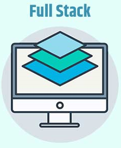

Front-end
O programador Front-end é o responsável pelo ambiente navegável e compreensível para os usuários de um site ou aplicativo.
Para saber maisBack-end
O programador Back-end é o responsável por construir a ponte entre o banco de dados do sistema, o servidor e o navegador
Para saber mais

Full stack
O programador Full Stack é responsável por desempenhar plenamente as minúcias tanto do Front-end quanto do Back-end.
Para saber mais